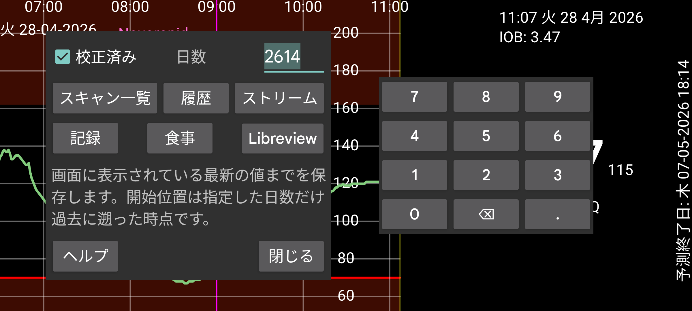

ar be de es hi it ja ko nl pl ru tr uk uz zh en
Juggluco のデータをファイルにエクスポートします。
食事は HTML で保存されます。その他のデータはすべて .tsv (Tab-separated values) で保存されます。これは LibreOffice Calc、Microsoft Excel、Mathematica、R などのプログラムに読み込めます。.csv に類似したものですが、項目を区切るためにカンマの代わりにタブを使います。エンコーディングは UTF-8 です。
列の意味は https://www.juggluco.nl/Juggluco/webserver.html にあります。
日数: Juggluco 7.1.0 から、保存する日数を選択できます。終了日は画面の右端です。したがって、Juggluco で過去のデータを表示している場合、古いデータのみがエクスポートされます(左中メニュー → 統計と同じ)。
校正済み: 校正済み値を保存します。この設定では、スキャン、ストリーム、履歴 はすべての項目について校正済みと生の値の両方を保存します。Libreview 形式では、利用可能な場合は校正済み値のみが保存され、それ以外は未校正(生の)値が保存されます。
Juggluco 7.1.0 から、Juggluco 内の Web サーバー(左メニュー → 設定 → データ交換 → Web サーバー)経由でこれらのデータを受信することも可能です。https://www.juggluco.nl/Juggluco/webserver.html を参照してください。
Libreview: Libreview 形式でデータを保存します。これにより、その形式を必要とするプログラムや Web サービスに、FreeStyle Libre 以外のセンサーのデータをインポートできます。Dexcom センサーでは 5 分値が保存され、Sibionics センサーでは 5 分ごとに 1 つのストリーム値が保存されます。Libre 0、2、3 センサーの履歴値も保存されます。インスリン用量、炭水化物、備考は、左メニュー → 設定 → データ交換 → Libreview → 記録を送信でこれらのカテゴリにラベルを割り当てた後にのみ保存されます。